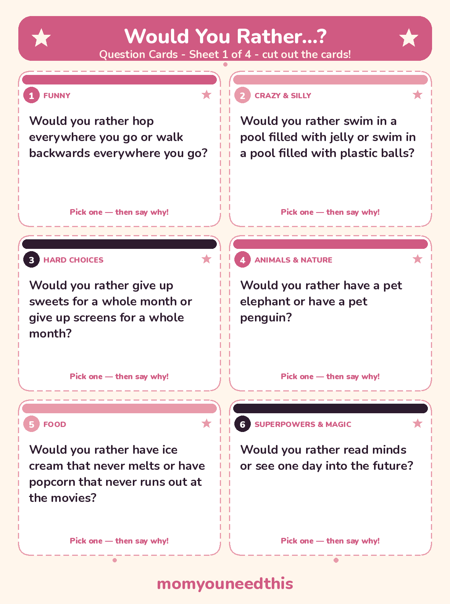
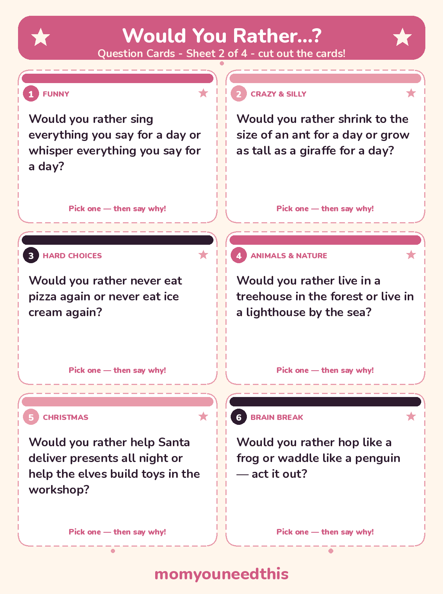
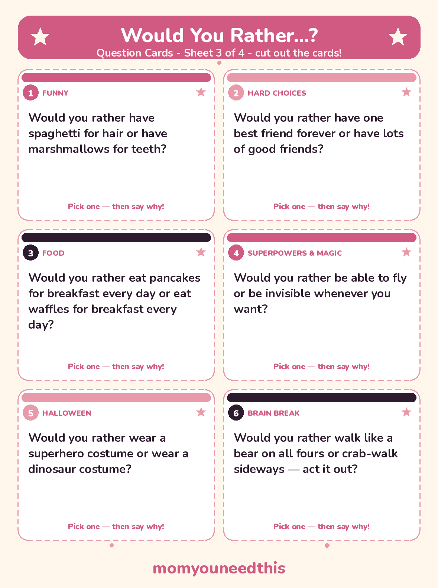
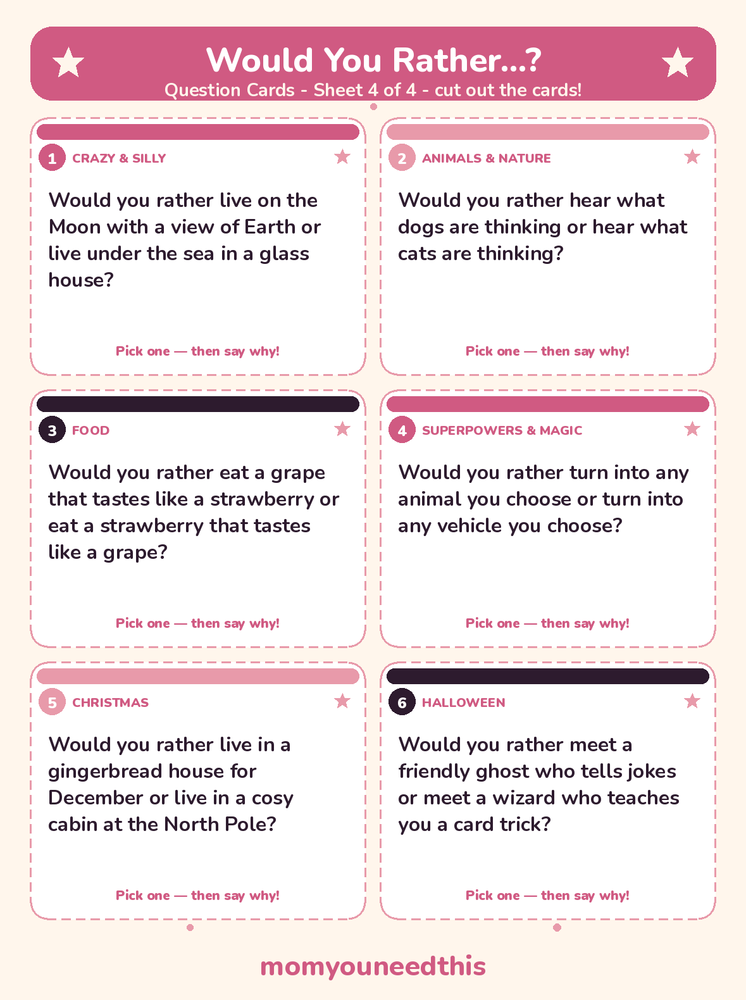

Would You Rather Questions for Kids 108 Choices That Split the Whole Room
Pick a side, then defend it. These 108 funny would you rather questions give kids two good choices — never a trick, never a wrong answer — across animals, food, superpowers, holidays and silly everyday life. Read them aloud, vote as a family, and get ready to change your mind.
Last updated: October 25, 2026
Quick Answer
This page collects 108 fun would you rather questions for kids ages 5 to 10, grouped by theme from animals and food to superpowers and holidays. Every question offers two choices a child might really pick. There are no wrong answers — just pick a side and explain why.
At a Glance
- Questions: 108, in 9 groups
- Ages: 5–10
- Printables: 4 question card sheets (6 cards each, 24 questions)
- Content: Clean — both choices are fun to pick
- Skills: Conversation, reasoning, explaining a choice
- Cost: Free — print at home
😂 Funny Would You Rather Questions
Start here — these are the warm-up questions that get everyone voting, arguing their corner and laughing at each other's reasons.
Would you rather hop everywhere you go or walk backwards everywhere you go?
Would you rather have hiccups every time you laugh or giggle every time someone says hello?
Would you rather wear a clown nose all day or wear bunny ears all day?
Would you rather talk like a robot for a whole day or talk like a pirate for a whole day?
Would you rather sneeze confetti or hiccup tiny soap bubbles?
Would you rather have hair that changes colour with your mood or hair that stands straight up when you get excited?
Would you rather sing everything you say for a day or whisper everything you say for a day?
Would you rather wear your pyjamas to a birthday party or wear a fancy party outfit to bed?
Would you rather eat every meal with a giant spoon or eat every meal with a tiny fork?
Would you rather have a theme song that plays when you walk into a room or have a spotlight that follows you around?
Would you rather laugh every time you try to tell a secret or smile every time you try to look serious?
Would you rather have shoes that squeak with every step or have a hat that spins in the wind?
Would you rather do a silly dance every time you hear music or freeze like a statue every time a bell rings?
Would you rather have spaghetti for hair or have marshmallows for teeth?
Would you rather have your stuffed animals talk to you or have your drawings talk to you?
Would you rather always enter a room by cartwheel or always enter a room by tiptoeing like a spy?
🤪 Crazy Would You Rather Questions (Silly Ones, Too)
The crazier the choice, the better the reasons get. None of these could really happen — that is exactly why kids love defending them.
Would you rather live in a house shaped like a giant shoe or live in a house made entirely of pillows?
Would you rather swim in a pool filled with jelly or swim in a pool filled with plastic balls?
Would you rather slide down a rainbow or ride on a cloud?
Would you rather have a pet dragon the size of a cat or have a pet dinosaur the size of a dog?
Would you rather live on the Moon with a view of Earth or live under the sea in a glass house?
Would you rather drive a car made of candy or fly a giant paper plane?
Would you rather have a treehouse with a waterslide or have a treehouse with a secret elevator?
Would you rather shrink to the size of an ant for a day or grow as tall as a giraffe for a day?
Would you rather walk on the ceiling or bounce everywhere you go like a bouncy ball?
Would you rather have a backpack that can hold anything, no matter how big, or have a hat that a snack pops out of whenever you tap it?
Would you rather sleep in a bed shaped like a race car or sleep in a hammock hanging between two trees?
Would you rather have snow in the middle of summer or have warm sunshine all winter where you live?
Would you rather visit a planet made of cheese or visit a planet where it rains lemonade?
Would you rather have a garden where lollipops grow or have a garden where toys grow overnight?
🤔 Hard Would You Rather Questions: Choices That Make You Think
These are real dilemmas for kids — the kind where both sides cost something, so the reasons matter more than the answer. Give up screens or give up sweets is the one that divides most families.
Would you rather give up sweets for a whole month or give up screens for a whole month?
Would you rather never eat pizza again or never eat ice cream again?
Would you rather do an extra page of homework every school day or do an extra chore at home every day?
Would you rather give up watching TV for a year or give up listening to music for a year?
Would you rather live without books for a month or live without drawing and colouring for a month?
Would you rather always say exactly what you are thinking or never speak unless someone asks you a question?
Would you rather be the best player on a team that loses or be an ordinary player on a team that wins?
Would you rather always know your birthday presents in advance or always be completely surprised?
Would you rather have one best friend forever or have lots of good friends?
Would you rather spend a whole day alone with no one to play with or spend a whole day in a crowd of people you do not know?
Would you rather save your money for one big toy or spend your money on lots of small treats?
Would you rather be five years older for a week or be five years younger for a week?
Would you rather get up very early every day or stay up very late every night?
Would you rather win a game by luck or win a game by skill after lots of practice?
🦁 Animal & Nature Would You Rather Questions
Pets you could never really keep, places you would love to sleep, and the great dog-versus-cat thinking debate, all in one section.
Would you rather have a pet elephant or have a pet penguin?
Would you rather hear what dogs are thinking or hear what cats are thinking?
Would you rather ride on the back of a friendly dolphin or ride on the back of a gentle giant turtle?
Would you rather live in a treehouse in the forest or live in a lighthouse by the sea?
Would you rather camp under the stars or sleep in a cabin while snow falls outside?
Would you rather have tiger stripes or have zebra stripes?
Would you rather watch baby turtles hatch on a beach or watch baby birds learn to fly?
Would you rather climb the tallest tree in the park or explore a cave with a flashlight?
Would you rather live where it snows every winter or live where it is summer all year?
Would you rather have a garden that grows giant sunflowers or have a garden that grows flowers in rainbow colours?
Would you rather have a pet parrot that repeats everything you say or have a pet dog that brings you your slippers?
Would you rather plant a tree and watch it grow for years or plant flowers that bloom every spring?
Would you rather swim with friendly sea turtles or splash under a waterfall?
Would you rather have a window that looks out on mountains or have a window that looks out on the ocean?
🍕 Food Would You Rather Questions
Breakfast battles, dessert logic and the questions most likely to be re-argued at the next meal. Hungry voters decide fast — then change sides.
Would you rather eat pancakes for breakfast every day or eat waffles for breakfast every day?
Would you rather have a bowl of spaghetti that never ends or have a sandwich taller than you are?
Would you rather eat only pizza from now on or eat only burgers from now on?
Would you rather have ice cream that never melts or have popcorn that never runs out at the movies?
Would you rather eat dessert first at every meal or eat two desserts at the end of every meal?
Would you rather build your own pizza with any toppings you like or build your own ice-cream sundae with any toppings you like?
Would you rather eat a grape that tastes like a strawberry or eat a strawberry that tastes like a grape?
Would you rather have broccoli that tastes like candy or have candy that is as healthy as broccoli?
Would you rather eat breakfast foods for dinner or eat dinner foods for breakfast?
Would you rather have a birthday cake made of stacked pancakes or have a birthday cake made of stacked donuts?
Would you rather grow your own strawberries or grow your own pumpkins?
Would you rather have jelly beans that each taste like a different fruit or have one giant jelly bean that tastes like your favourite fruit?
🦸 Superpowers & Magic Would You Rather Questions
Fly or turn invisible is the classic — but the interesting fights happen further down the list, where every power comes with a different kind of fun.
Would you rather be able to fly or be invisible whenever you want?
Would you rather run faster than a train or be strong enough to lift a car?
Would you rather read minds or see one day into the future?
Would you rather speak every language in the world or play every musical instrument perfectly?
Would you rather have a magic carpet that flies or have a magic door that opens anywhere?
Would you rather stop time for an hour each day or rewind time by ten minutes each day?
Would you rather breathe underwater or walk on clouds?
Would you rather have a wand that makes things float or have a wand that makes things grow?
Would you rather have X-ray vision to find hidden things or have super hearing to hear a whisper across a field?
Would you rather make it rain whenever plants need water or make the sun come out whenever you want a sunny day?
Would you rather have a cape that makes you brave or have shoes that make you jump over houses?
Would you rather turn into any animal you choose or turn into any vehicle you choose?
Would you rather have a robot helper who tidies your room or have a robot helper who cooks your favourite meals?
Would you rather find a treasure map that is real or find a key that opens a door to a secret garden?
🎄 Would You Rather Christmas Questions
A short holiday round for December — sleigh rides, workshop shifts and the presents question that starts a genuine family debate.
Would you rather help Santa deliver presents all night or help the elves build toys in the workshop?
Would you rather ride in Santa’s sleigh or ride on a reindeer’s back?
Would you rather live in a gingerbread house for December or live in a cosy cabin at the North Pole?
Would you rather wake up to snow every Christmas morning or wake up to a sunny Christmas morning at the beach?
Would you rather decorate a giant Christmas tree in your town square or decorate ten small trees all over your house?
Would you rather give a present to everyone in your class or receive one present you have wished for all year?
Would you rather write a letter to Santa and get a reply or talk to Santa on the phone?
Would you rather build a snowman that comes to life for one day or build the biggest snow fort on your street?
🎃 Would You Rather Halloween Questions
A small, not-scary Halloween round — costumes, pumpkins and treats, with one friendly ghost who only tells jokes.
Would you rather wear a superhero costume or wear a dinosaur costume?
Would you rather carve a pumpkin with a funny face or paint a pumpkin with bright colours?
Would you rather collect only chocolate treats or collect only fruity candy treats on Halloween night?
Would you rather meet a friendly ghost who tells jokes or meet a wizard who teaches you a card trick?
Would you rather bob for apples at a Halloween party or play a mummy-wrap game at a Halloween party?
Would you rather carry a pumpkin bucket that glows in the dark or carry a treat bag shaped like a friendly monster?
🏃 Would You Rather Brain Break Questions
Every question in this round is a movement: read one, everyone acts out their pick for twenty seconds, then sit back down. Teachers also use this set as a would you rather movement break between lessons — the frog-versus-penguin opener never fails.
Would you rather hop like a frog or waddle like a penguin — act it out?
Would you rather stomp like a dinosaur or tiptoe like a mouse — act it out?
Would you rather walk like a bear on all fours or crab-walk sideways — act it out?
Would you rather flap your arms and fly like a bird or swim through the air like a fish — act it out?
Would you rather march like a toy soldier or bounce like a ball — act it out?
Would you rather balance on one foot like a flamingo or stretch up tall like a giraffe reaching for leaves — act it out?
Would you rather spin slowly like a helicopter landing or sway side to side like a tree in the wind — act it out?
Would you rather jump like a kangaroo or wiggle like a worm — act it out?
Would you rather row an imaginary boat or ride an imaginary horse — act it out?
Would you rather dance like a robot or freeze like a statue whenever you hear a clap — act it out?
✂️ The Printable Question Cards
Twenty-four of the questions on this page are also cut-out cards — a mix from every section, so one sheet can run a whole game. Print the four sheets, cut along the dashed lines, and keep a set in the car, a lunchbox or the dinner-table drawer.

✂️ Download Your Free Question Cards — Sheet 1
6 mixed would-you-rather questions on cut-out cards — sheet 1 of 4.
⬇️ Download Free Question Cards 🖨️ Print🎁 Free printable for ages 5–10

✂️ Download Your Free Question Cards — Sheet 2
6 mixed would-you-rather questions on cut-out cards — sheet 2 of 4.
⬇️ Download Free Question Cards 🖨️ Print🎁 Free printable for ages 5–10

✂️ Download Your Free Question Cards — Sheet 3
6 mixed would-you-rather questions on cut-out cards — sheet 3 of 4.
⬇️ Download Free Question Cards 🖨️ Print🎁 Free printable for ages 5–10

✂️ Download Your Free Question Cards — Sheet 4
6 mixed would-you-rather questions on cut-out cards — sheet 4 of 4.
⬇️ Download Free Question Cards 🖨️ Print🎁 Free printable for ages 5–10
🌱 Why This Game Works So Well
A good would-you-rather question is a conversation in disguise. To answer, a child has to weigh two options, pick a side and give a reason — often starting with the word “because,” which is the beginning of real reasoning. Then comes the part no worksheet teaches: listening to someone who chose the opposite, and finding out their reason makes sense too. Because there are no wrong answers and nothing to win, shy kids join in as easily as confident ones, younger siblings can play alongside older ones, and the game quietly becomes family connection — the car ride, the dinner table and the five minutes before bed all turn into time when everyone actually hears how everyone else thinks.
🖨️ How to Play Would You Rather
- Ask, then everyone votes. Read a question aloud and let each person point, raise a hand or move to one side of the room for their choice. Count the votes out loud — a close split is the best result.
- Defend your choice in one sentence. Every voter finishes the sentence “I picked it because…” before the next question. Short reasons are fine; funny reasons are welcome.
- Use the pass rule. Anyone can say “pass” on any question, no questions asked, and simply vote again on the next one. The game only works while it stays easy to join.
- Take it anywhere. Run a round on car rides, keep a few questions ready at the dinner table, or use the Brain Break section as a classroom brain break between lessons — one movement question, twenty seconds of acting it out, then back to work.
🤔 More Games & Giggles for Kids
🎄 Christmas Jokes for Kids
40 clean Christmas jokes about Santa, reindeer and snowmen, with printable joke cards. Read the Christmas jokes.
❓ Riddles for Kids
Short riddles with answers hidden until you are ready — what am I, animals, food and nature. Try the riddles.
🤣 Knock Knock Jokes
24 clean knock knock jokes little kids can memorize and tell, with printable cards. Tell a knock knock joke.
📚 Learning Activities
The full hub of free printable activities for toddlers and preschoolers. Browse activities.
❓ Would You Rather Questions FAQ
What age are these questions best for?
The sweet spot is ages 5 to 10. A 5-year-old will love the funny, animal and brain-break questions and can answer with a point and a short reason; by 8 or 9, most kids argue the hard choices properly and start inventing questions of their own.
Are these questions clean and suitable for the classroom?
Yes — all 108 questions are clean: no teasing, no potty humour, nothing scary, and both options in every question are genuinely fun to pick. The Halloween round is not-scary on purpose, and the brain-break round is written for teachers to use between lessons.
What are some fun would you rather questions for a car ride?
Start with the questions that need no acting out: give up sweets or give up screens, fly or turn invisible, and a pet elephant or a pet penguin. Read one aloud, let everyone in the car vote, and have each person defend their choice in one sentence before the next question.
How do you play would you rather with kids?
Read a question, let everyone pick a side, then have each person explain their choice in one sentence starting with “because.” There are no wrong answers and no winners. Anyone can pass on a question and join back in on the next one — that pass rule keeps the game fun for shy players.
Can I print the questions?
Yes — 24 of the questions are also on four printable question card sheets (6 cards per sheet), free to print at home with no signup. Cut along the dashed lines to make a card set for the car, a lunchbox or the classroom.